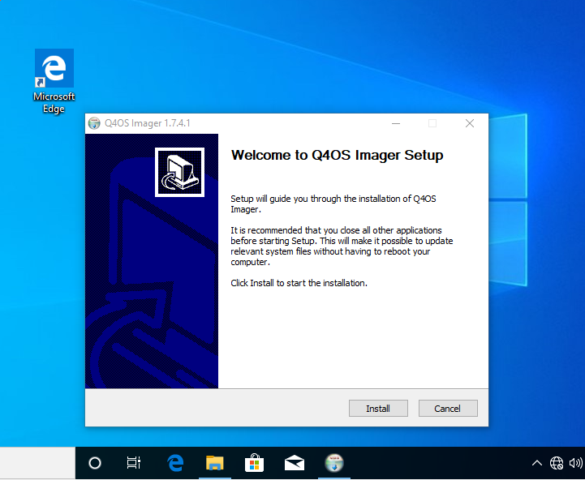
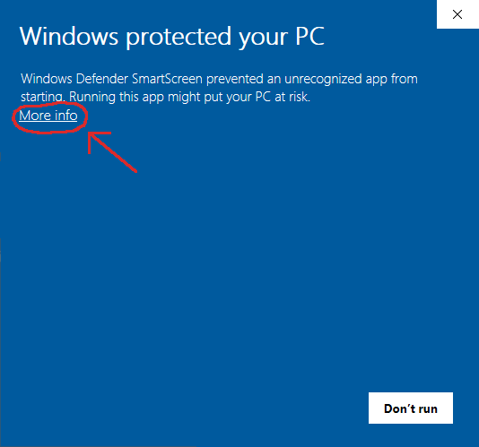
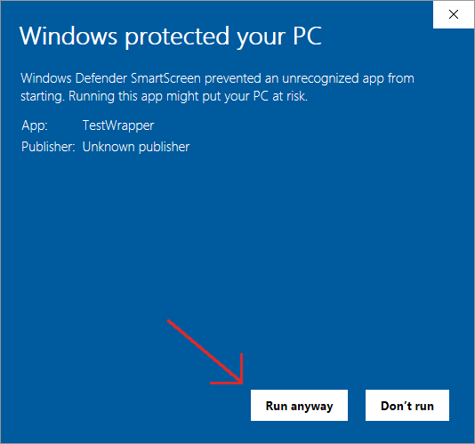
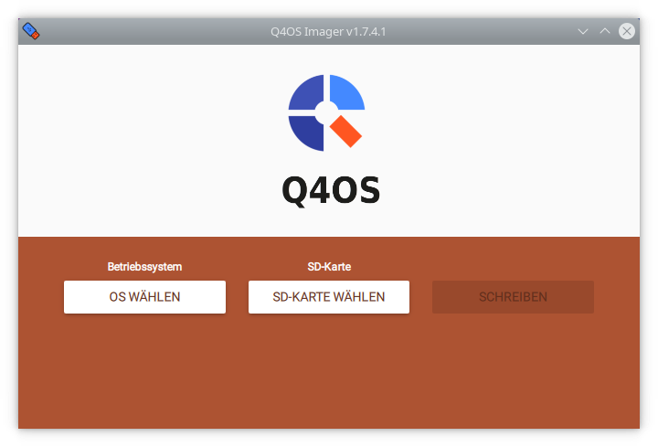
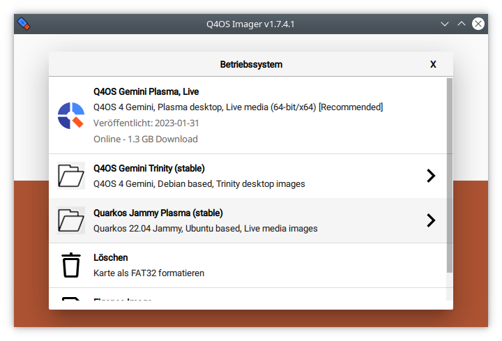

Fresh Q4OS installation, user manual, rev. 07/2023
user manual
1. IntroductionIn order to make a fresh Q4OS installation, you need to acquire ISO image file, create bootable USB or DVD/CD media and complete the installation procedure. At first, download the desired ISO image from the downloads section of Q4OS website and create bootable media, see the next chapters. The alternative way is to order prepared media in Q4OS e-shop.
We recommend using a dedicated tool Q4OS imager for Windows, please see An easy way to create Q4OS Live bootable USB forum topic for Imager description and download.
We haven't signed Imager installer yet, so you will need to satisfy Windows it's safe. On Windows 11/10, depending on the security policy of your system, a popup window titled "Windows protected your PC" may appear when trying to execute the installer. You only need to click "More info" and confirm the Imager setup is safe to continue.


In the User Account Control UAC window, click Yes and the Imager setup window will now appear. Follow the instructions of the guide style installer.
An alternative way is to use Rufus application to create live USB, see how to create live cd media or live usb media.
As Q4OS is Debian based, please follow Debian instructions.
Imager for Q4OS is recommended, please see An easy way to create Q4OS Live bootable USB forum topic for Imager description and download.
 There is an excellent external website available, that describes Q4OS installation from the live media in detail. See how to create live cd media or live usb media, preparing to install and finally Q4OS installation.
There are two basic options after booting from installation media, classic and fast installation. Classic install will ask you to setup partitioning, so you have option to keep current data, resize existing partitions, or repartitioning harddrive to your wishes. You will be able to free some harddrive space during installation and have Q4OS installed alongside other operating systems. The list of systems will be autodetected and offered on every boot.
Fast install will recreate all partitioning on the disk drive automatically and format it with no question. It will erase all the hard drive data and install Q4OS onto the primary device. A predefined user account will be created, and the system will ask the user to set up a password immediately after the first login.
Note, installation CD doesn't require any network connection, it will install the basic Q4OS system on computers even with no network card.
Please note, the setup process takes a while. Once completed, reboot and login into the fresh and clean Q4OS Desktop.
The first postinstall step a user should do is to run 'Desktop profiler' tool and apply the most applicable desktop profile according to his intention. There are a few basic profiles available at this time, however additional different profiles will continue to be created, see desktop profiler user manual. After applying a profile, the user is free to install required applications, the best and recommended way is to use the 'Software Centre' from the system menu.
Now, it's the right time to install desired applications. The best and recommended way is to use Q4OS Desktop profiler and Software center, please read Q4OS documentation. Enjoy your new desktop and don't forget to involve yourself in the Q4OS community.
Fresh Q4OS installation, user manual, rev. 07/2023
{kind=link}
{kind=link}